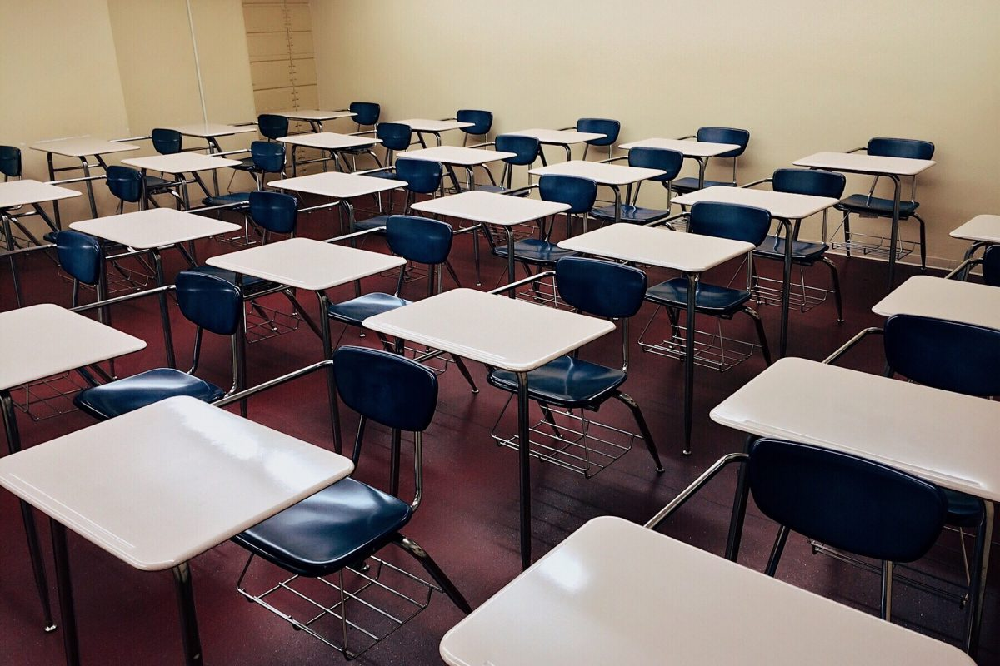

about
Joska school is located along Kangundo road, Machakos county, approximately 20 miles from Nairobi. It serves a community of approximately 70,000 people. The school was started on September 3, 2007 allowing more room for other children who were on a waiting list to join MOHI program.
